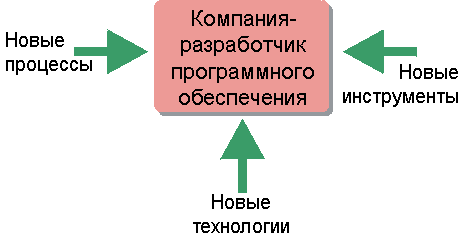

| Настраиваемый процесс |
 |
|
 Rational Unified Process предоставляет среду, которую можно настроить в соответствии с конкретными потребностями организации, разрабатывающей программное обеспечение. На настройку влияют применяемая технология, используемые инструментальные средства, а также текущие процессы в организации. Rational Unified Process (RUP) позволяет удовлетворить потребности практически любых организаций, разрабатывающих программное обеспечение. В большинстве случаев процесс разработки ПО потребуется изменить, настроить, расширить и подготовить для обеспечения соответствия конкретным характеристикам, ограничениям и хронологии данной организации. В разделе Среда описывается настройка и реализация процесса разработки ПО в проекте. Результатом является процесс, настроенный для конкретного проекта. Дополнительные сведения приведены в разделе Понятия: Адаптация RUP. Можно расширить web-сайт RUP, включив в него "ноу-хау" вашего процесса разработки или набор многоразовых ресурсов. Дополнительная информация приведена в разделе Rational Method Composer. |
© Copyright IBM Corp. 1987, 2006. Все права защищены.. |